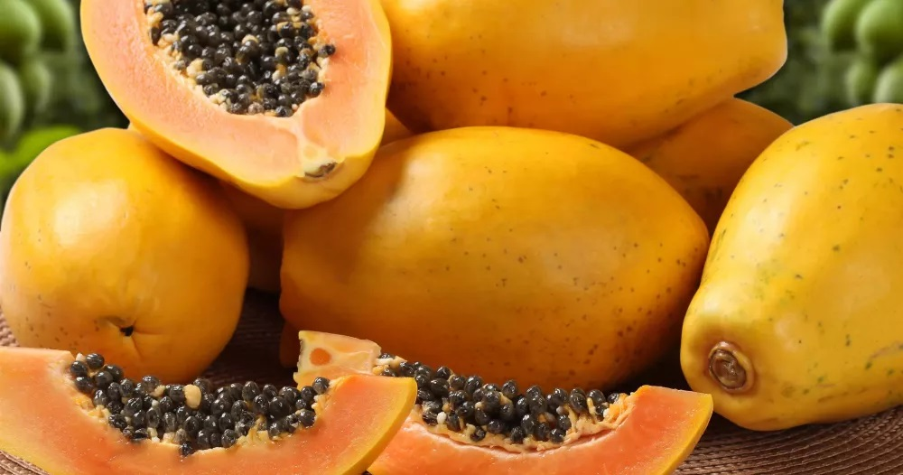

La Papaye
La papaye se consomme tout simplement fraîche, ou séchée en collation. Ses petites graines noires ont une saveur légèrement poivrée et sa chair est à la fois sucrée et délicatement parfumée. Riche en fibres, c’est un fruit hautement vitaminé qui contient plusieurs substances antioxydantes essentielles à la santé de l’organisme.
Les bienfaits de la papaye
Plusieurs études prospectives et épidémiologiques ont démontré qu’une consommation élevée de légumes et de fruits diminuait le risque de maladies cardiovasculaires, de certains cancers et d’autres maladies chroniques. La présence d’antioxydants dans les légumes et les fruits pourrait jouer un rôle dans ces effets protecteurs. Des chercheurs ont montré in vitro et chez l’animal que le jus de la papaye avait une activité antioxydante comparable à celle de la vitamine E, un antioxydant bien connu. Il est préférable de consommer la papaye bien mûre si on veut profiter au maximum de son potentiel antioxydant.
Comment bien choisir la papaye ?
La papaye est un fruit exotique appartenant à la famille des Caricacées et originaire d’Amérique tropicale. En France, on la retrouve sur les étals en hiver majoritairement, comme la plupart des fruits exotiques. On reconnaît la papaye à sa peau vert orangé qui renferme une chair orange et parfumée ainsi que de petits pépins noirs à la saveur poivrée.
Comment préparer la papaye ?
En cuisine, la papaye permet la réalisation de recettes dépaysantes et originales. Elle a l’avantage de se consommer aussi bien crue que cuite, en version salée ou en version sucrée. Elle se marie particulièrement bien avec le citron vert, la noix de coco, la banane, le poisson et la viande blanche.